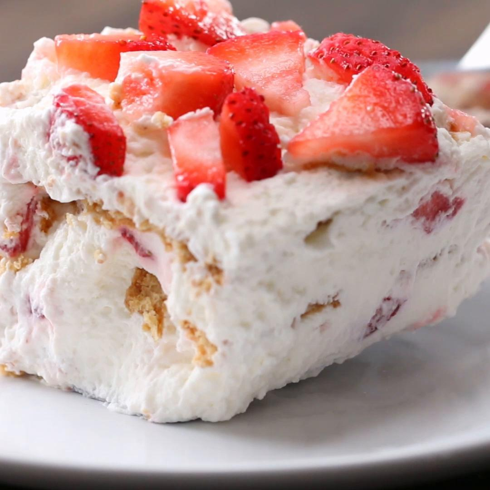

Strawberry Icebox Cake

Total Time : 3 hours 10 minutes
Ingredients
- 5 cups sweetened whipped cream
- 11 large rectangular graham crackers
- 3 cups strawberry, chopped
Directions
- Spread a thin layer of whipped cream in a square glass baking dish.
- Layer graham crackers on top, then cover with a layer of whipped cream.
- Sprinkle ⅓ of the strawberries on top, then layer with cream again.
- Repeat steps 2 and 3 until no more ingredients remain. (The top layer should be strawberries and should not be covered with cream.)
- Refrigerate for at least 3 hours.
- Enjoy!
Nutrition
Estimated values based on one serving
- Calories 106
- Sugar 6g
- Fiber 1g
- Carbs 11g
- Fat 6g
- Protein 1g
Click here for more information.